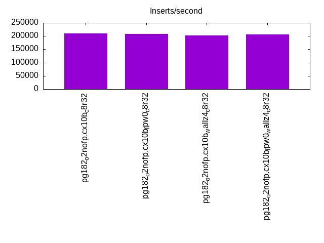
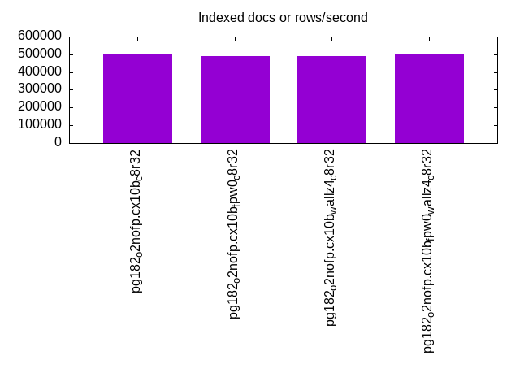
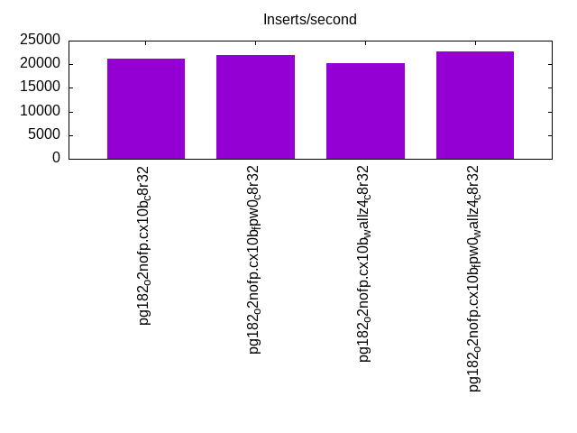
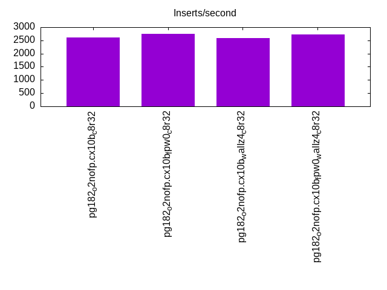
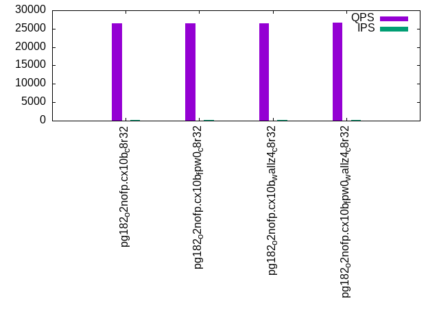
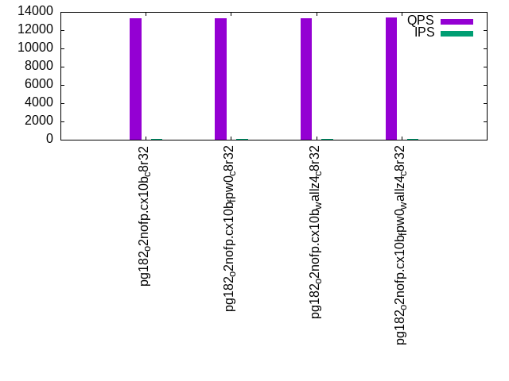
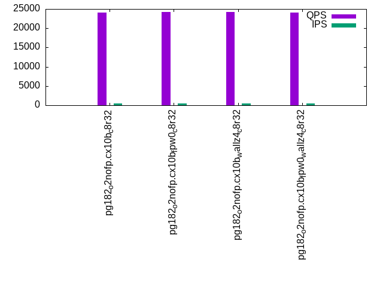
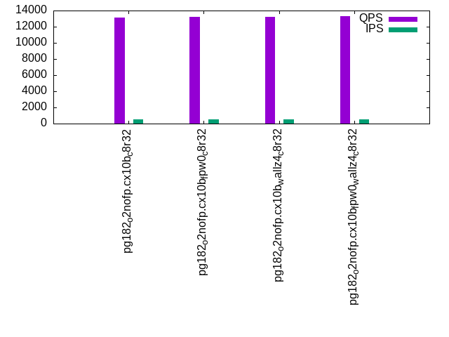
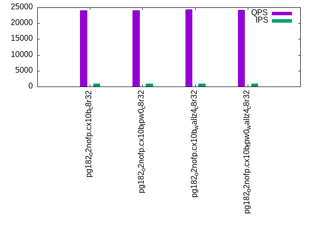
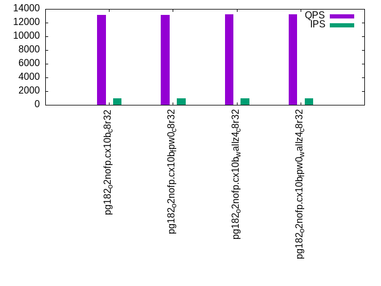

This is a report for the insert benchmark with 30M docs and 1 client(s). It is generated by scripts (bash, awk, sed) and Tufte might not be impressed. An overview of the insert benchmark is here and a short update is here. Below, by DBMS, I mean DBMS+version.config. An example is my8020.c10b40 where my means MySQL, 8020 is version 8.0.20 and c10b40 is the name for the configuration file.
The test server has 8 AMD cores, 32G RAM and an NVMe device for the database. The benchmark was run with 1 client and there were 1 or 3 connections per client (1 for queries or inserts without rate limits, 1+1 for rate limited inserts+deletes). It uses 1 table with a table per client. It loads 30M rows per table without secondary indexes, creates 3 secondary indexes per table, then inserts 40m+10m rows per table with a delete per insert to avoid growing the table. It then does 6 read+write tests for 3600s each that do queries as fast as possible with 100,100,500,500,1000,1000 inserts/s and the same for deletes/s per client concurrent with the queries. The database is cached by Postgres. Clients and the DBMS share one server.
The tested DBMS are:
The numbers are inserts/s for l.i0, l.i1 and l.i2, indexed docs (or rows) /s for l.x and queries/s for qr100, qp100 thru qr1000, qp1000" The values are the average rate over the entire test for inserts (IPS) and queries (QPS). The range of values for IPS and QPS is split into 3 parts: bottom 25%, middle 50%, top 25%. Values in the bottom 25% have a red background, values in the top 25% have a green background and values in the middle have no color. A gray background is used for values that can be ignored because the DBMS did not sustain the target insert rate. Red backgrounds are not used when the minimum value is within 80% of the max value.
| dbms | l.i0 | l.x | l.i1 | l.i2 | qr100 | qp100 | qr500 | qp500 | qr1000 | qp1000 |
|---|---|---|---|---|---|---|---|---|---|---|
| pg182_o2nofp.cx10b_c8r32 | 209790 | 500002 | 21119 | 2608 | 26412 | 13262 | 24084 | 13172 | 24086 | 13135 |
| pg182_o2nofp.cx10b_fpw0_c8r32 | 208333 | 491805 | 21870 | 2751 | 26540 | 13308 | 24164 | 13234 | 24046 | 13116 |
| pg182_o2nofp.cx10b_wallz4_c8r32 | 201342 | 491805 | 20274 | 2582 | 26522 | 13305 | 24168 | 13202 | 24431 | 13176 |
| pg182_o2nofp.cx10b_fpw0_wallz4_c8r32 | 206896 | 500002 | 22663 | 2731 | 26651 | 13370 | 24134 | 13326 | 24245 | 13256 |
This table has relative throughput, throughput for the DBMS relative to the DBMS in the first line, using the absolute throughput from the previous table. Values less than 0.95 have a yellow background. Values greater than 1.05 have a blue background.
| dbms | l.i0 | l.x | l.i1 | l.i2 | qr100 | qp100 | qr500 | qp500 | qr1000 | qp1000 |
|---|---|---|---|---|---|---|---|---|---|---|
| pg182_o2nofp.cx10b_c8r32 | 1.00 | 1.00 | 1.00 | 1.00 | 1.00 | 1.00 | 1.00 | 1.00 | 1.00 | 1.00 |
| pg182_o2nofp.cx10b_fpw0_c8r32 | 0.99 | 0.98 | 1.04 | 1.05 | 1.00 | 1.00 | 1.00 | 1.00 | 1.00 | 1.00 |
| pg182_o2nofp.cx10b_wallz4_c8r32 | 0.96 | 0.98 | 0.96 | 0.99 | 1.00 | 1.00 | 1.00 | 1.00 | 1.01 | 1.00 |
| pg182_o2nofp.cx10b_fpw0_wallz4_c8r32 | 0.99 | 1.00 | 1.07 | 1.05 | 1.01 | 1.01 | 1.00 | 1.01 | 1.01 | 1.01 |
This lists the average rate of inserts/s for the tests that do inserts concurrent with queries. For such tests the query rate is listed in the table above. The read+write tests are setup so that the insert rate should match the target rate every second. Cells that are not at least 95% of the target have a red background to indicate a failure to satisfy the target.
| dbms | qr100.L1 | qp100.L2 | qr500.L3 | qp500.L4 | qr1000.L5 | qp1000.L6 |
|---|---|---|---|---|---|---|
| pg182_o2nofp.cx10b_c8r32 | 100 | 100 | 500 | 500 | 999 | 999 |
| pg182_o2nofp.cx10b_fpw0_c8r32 | 100 | 100 | 500 | 500 | 999 | 999 |
| pg182_o2nofp.cx10b_wallz4_c8r32 | 100 | 100 | 500 | 500 | 999 | 999 |
| pg182_o2nofp.cx10b_fpw0_wallz4_c8r32 | 100 | 100 | 499 | 500 | 999 | 999 |
| target | 100 | 100 | 500 | 500 | 1000 | 1000 |
l.i0: load without secondary indexes. Graphs for performance per 1-second interval are here.
Average throughput:

Insert response time histogram: each cell has the percentage of responses that take <= the time in the header and max is the max response time in seconds. For the max column values in the top 25% of the range have a red background and in the bottom 25% of the range have a green background. The red background is not used when the min value is within 80% of the max value.
| dbms | 256us | 1ms | 4ms | 16ms | 64ms | 256ms | 1s | 4s | 16s | gt | max |
|---|---|---|---|---|---|---|---|---|---|---|---|
| pg182_o2nofp.cx10b_c8r32 | 99.989 | 0.011 | 0.004 | ||||||||
| pg182_o2nofp.cx10b_fpw0_c8r32 | 99.989 | 0.011 | 0.002 | ||||||||
| pg182_o2nofp.cx10b_wallz4_c8r32 | 99.988 | 0.011 | nonzero | 0.005 | |||||||
| pg182_o2nofp.cx10b_fpw0_wallz4_c8r32 | 99.991 | 0.009 | 0.002 |
Performance metrics for the DBMS listed above. Some are normalized by throughput, others are not. Legend for results is here.
ips qps rps rmbps wps wmbps rpq rkbpq wpi wkbpi csps cpups cspq cpupq dbgb1 dbgb2 rss maxop p50 p99 tag 209790 0 0 0.0 779.1 88.8 0.000 0.000 0.004 0.433 22153 19.2 0.106 7 2.9 7.8 1.8 0.004 210275 201879 pg182_o2nofp.cx10b_c8r32 208333 0 0 0.0 774.5 88.1 0.000 0.000 0.004 0.433 21719 19.2 0.104 7 2.9 7.8 2.4 0.002 208879 200678 pg182_o2nofp.cx10b_fpw0_c8r32 201342 0 0 0.0 751.3 85.5 0.000 0.000 0.004 0.435 21179 19.3 0.105 8 2.9 7.8 1.7 0.005 203664 195968 pg182_o2nofp.cx10b_wallz4_c8r32 206896 0 0 0.0 764.1 86.9 0.000 0.000 0.004 0.430 21537 19.3 0.104 7 2.9 7.8 2.4 0.002 208163 198579 pg182_o2nofp.cx10b_fpw0_wallz4_c8r32
Average values from iostat.
r/s rkB/s rrqm/s %rrqm r_await rareq-s w/s wkB/s wrqm/s %wrqm w_await wareq-s d/s dkB/s drqm/s %drqm d_await dareq-s f/s f_await aqu-sz %util 0.452 1.807 0.000 0.000 0.114 4.000 786.1 91764.4 37.24 4.933 0.468 115.5 0.148 1.037 0.000 0.000 0.281 1.531 43.16 1.718 0.439 12.36 pg182_o2nofp.cx10b_c8r32 0.022 0.089 0.000 0.000 0.037 0.444 781.4 91092.6 37.64 5.007 0.422 115.3 0.067 0.652 0.000 0.000 0.148 1.358 42.97 1.639 0.403 11.88 pg182_o2nofp.cx10b_fpw0_c8r32 0.014 0.057 0.000 0.000 0.000 0.286 757.2 88253.2 36.63 5.030 0.425 115.3 0.050 0.600 0.000 0.000 0.226 1.381 41.99 1.549 0.396 11.21 pg182_o2nofp.cx10b_wallz4_c8r32 0.007 0.029 0.000 0.000 0.000 0.143 770.2 89781.7 37.08 5.024 0.426 115.4 0.079 0.686 0.000 0.000 0.161 1.310 42.55 1.685 0.394 12.08 pg182_o2nofp.cx10b_fpw0_wallz4_c8r32
l.x: create secondary indexes.
Average throughput:

Performance metrics for the DBMS listed above. Some are normalized by throughput, others are not. Legend for results is here.
ips qps rps rmbps wps wmbps rpq rkbpq wpi wkbpi csps cpups cspq cpupq dbgb1 dbgb2 rss maxop p50 p99 tag 500002 0 1 0.0 1030.9 126.6 0.000 0.000 0.002 0.259 2979 11.1 0.006 2 5.8 13.3 3.0 0.002 NA NA pg182_o2nofp.cx10b_c8r32 491805 0 0 0.0 1083.8 133.3 0.000 0.000 0.002 0.278 3031 11.1 0.006 2 5.8 13.3 3.0 0.001 NA NA pg182_o2nofp.cx10b_fpw0_c8r32 491805 0 0 0.0 725.8 89.2 0.000 0.000 0.001 0.186 1725 11.3 0.004 2 5.8 12.2 3.0 0.002 NA NA pg182_o2nofp.cx10b_wallz4_c8r32 500002 0 0 0.0 802.4 98.7 0.000 0.000 0.002 0.202 1691 11.3 0.003 2 5.8 12.2 3.0 0.002 NA NA pg182_o2nofp.cx10b_fpw0_wallz4_c8r32
Average values from iostat.
r/s rkB/s rrqm/s %rrqm r_await rareq-s w/s wkB/s wrqm/s %wrqm w_await wareq-s d/s dkB/s drqm/s %drqm d_await dareq-s f/s f_await aqu-sz %util 0.782 3.127 0.000 0.000 0.171 2.909 1124.5 141465 37.80 9.894 1.714 104.5 0.473 4099.1 0.000 0.000 0.509 5121.9 12.65 2.035 1.129 7.860 pg182_o2nofp.cx10b_c8r32 0.055 0.218 0.000 0.000 0.227 0.727 1181.9 148881 38.33 16.21 2.521 94.61 0.382 11246.1 0.000 0.000 0.307 4325.6 12.64 2.064 1.134 7.375 pg182_o2nofp.cx10b_fpw0_c8r32 0.036 0.145 0.000 0.000 0.091 0.727 791.7 99598.1 22.38 14.55 3.032 100.6 0.200 2533.0 0.000 0.000 0.437 4221.1 8.055 2.277 0.740 5.429 pg182_o2nofp.cx10b_wallz4_c8r32 0.018 0.073 0.000 0.000 0.000 0.364 875.2 110299 23.25 19.10 2.695 94.30 0.473 14947.3 0.000 0.000 0.409 3934.1 8.055 2.057 1.249 5.353 pg182_o2nofp.cx10b_fpw0_wallz4_c8r32
l.i1: continue load after secondary indexes created with 50 inserts per transaction. Graphs for performance per 1-second interval are here.
Average throughput:

Insert response time histogram: each cell has the percentage of responses that take <= the time in the header and max is the max response time in seconds. For the max column values in the top 25% of the range have a red background and in the bottom 25% of the range have a green background. The red background is not used when the min value is within 80% of the max value.
| dbms | 256us | 1ms | 4ms | 16ms | 64ms | 256ms | 1s | 4s | 16s | gt | max |
|---|---|---|---|---|---|---|---|---|---|---|---|
| pg182_o2nofp.cx10b_c8r32 | 54.924 | 45.074 | 0.001 | 0.001 | 0.045 | ||||||
| pg182_o2nofp.cx10b_fpw0_c8r32 | 48.965 | 51.035 | nonzero | nonzero | 0.020 | ||||||
| pg182_o2nofp.cx10b_wallz4_c8r32 | 58.328 | 41.672 | nonzero | 0.007 | |||||||
| pg182_o2nofp.cx10b_fpw0_wallz4_c8r32 | 52.424 | 47.575 | nonzero | 0.012 |
Delete response time histogram: each cell has the percentage of responses that take <= the time in the header and max is the max response time in seconds. For the max column values in the top 25% of the range have a red background and in the bottom 25% of the range have a green background. The red background is not used when the min value is within 80% of the max value.
| dbms | 256us | 1ms | 4ms | 16ms | 64ms | 256ms | 1s | 4s | 16s | gt | max |
|---|---|---|---|---|---|---|---|---|---|---|---|
| pg182_o2nofp.cx10b_c8r32 | 0.003 | 26.765 | 57.216 | 16.015 | 0.001 | 0.045 | |||||
| pg182_o2nofp.cx10b_fpw0_c8r32 | nonzero | 26.610 | 70.888 | 2.502 | nonzero | 0.020 | |||||
| pg182_o2nofp.cx10b_wallz4_c8r32 | 0.002 | 27.665 | 53.096 | 19.237 | 0.008 | ||||||
| pg182_o2nofp.cx10b_fpw0_wallz4_c8r32 | 0.002 | 26.657 | 71.965 | 1.377 | 0.006 |
Performance metrics for the DBMS listed above. Some are normalized by throughput, others are not. Legend for results is here.
ips qps rps rmbps wps wmbps rpq rkbpq wpi wkbpi csps cpups cspq cpupq dbgb1 dbgb2 rss maxop p50 p99 tag 21119 0 0 0.0 266.7 29.3 0.000 0.000 0.013 1.420 8727 19.9 0.413 75 7.8 38.3 0.1 0.045 14098 9399 pg182_o2nofp.cx10b_c8r32 21870 0 0 0.0 237.7 25.9 0.000 0.000 0.011 1.215 8960 20.2 0.410 74 7.8 35.0 5.0 0.020 16547 11998 pg182_o2nofp.cx10b_fpw0_c8r32 20274 0 0 0.0 237.6 26.0 0.000 0.000 0.012 1.311 8392 19.5 0.414 77 7.8 35.7 3.4 0.007 13348 7749 pg182_o2nofp.cx10b_wallz4_c8r32 22663 0 0 0.0 242.7 26.4 0.000 0.000 0.011 1.194 9271 20.3 0.409 72 7.8 33.9 7.9 0.012 17348 12398 pg182_o2nofp.cx10b_fpw0_wallz4_c8r32
Average values from iostat.
r/s rkB/s rrqm/s %rrqm r_await rareq-s w/s wkB/s wrqm/s %wrqm w_await wareq-s d/s dkB/s drqm/s %drqm d_await dareq-s f/s f_await aqu-sz %util 0.111 0.444 0.000 0.000 0.077 1.782 266.4 29968.8 11.69 4.367 0.736 113.0 0.012 0.093 0.000 0.000 0.025 0.117 17.78 1.707 0.177 4.958 pg182_o2nofp.cx10b_c8r32 0.005 0.020 0.000 0.000 0.003 0.099 237.4 26530.2 10.35 4.369 0.695 113.5 0.012 8.873 0.000 0.000 0.031 14.70 16.45 1.746 0.166 4.648 pg182_o2nofp.cx10b_fpw0_c8r32 0.005 0.018 0.000 0.000 0.003 0.092 237.3 26544.7 10.37 4.444 0.861 112.6 0.011 0.112 0.000 0.000 0.023 0.214 16.31 1.698 0.170 4.592 pg182_o2nofp.cx10b_wallz4_c8r32 0.003 0.011 0.000 0.000 0.003 0.057 238.2 26494.6 10.77 4.445 0.676 113.2 0.006 0.093 0.000 0.000 0.036 0.443 17.09 1.735 0.166 4.864 pg182_o2nofp.cx10b_fpw0_wallz4_c8r32
l.i2: continue load after secondary indexes created with 5 inserts per transaction. Graphs for performance per 1-second interval are here.
Average throughput:

Insert response time histogram: each cell has the percentage of responses that take <= the time in the header and max is the max response time in seconds. For the max column values in the top 25% of the range have a red background and in the bottom 25% of the range have a green background. The red background is not used when the min value is within 80% of the max value.
| dbms | 256us | 1ms | 4ms | 16ms | 64ms | 256ms | 1s | 4s | 16s | gt | max |
|---|---|---|---|---|---|---|---|---|---|---|---|
| pg182_o2nofp.cx10b_c8r32 | 49.005 | 50.994 | 0.001 | nonzero | 0.018 | ||||||
| pg182_o2nofp.cx10b_fpw0_c8r32 | 51.520 | 48.479 | 0.001 | nonzero | 0.005 | ||||||
| pg182_o2nofp.cx10b_wallz4_c8r32 | 49.648 | 50.350 | 0.002 | nonzero | 0.033 | ||||||
| pg182_o2nofp.cx10b_fpw0_wallz4_c8r32 | 49.760 | 50.239 | nonzero | nonzero | nonzero | 0.020 |
Delete response time histogram: each cell has the percentage of responses that take <= the time in the header and max is the max response time in seconds. For the max column values in the top 25% of the range have a red background and in the bottom 25% of the range have a green background. The red background is not used when the min value is within 80% of the max value.
| dbms | 256us | 1ms | 4ms | 16ms | 64ms | 256ms | 1s | 4s | 16s | gt | max |
|---|---|---|---|---|---|---|---|---|---|---|---|
| pg182_o2nofp.cx10b_c8r32 | 4.336 | 34.646 | 59.276 | 1.743 | nonzero | 0.018 | |||||
| pg182_o2nofp.cx10b_fpw0_c8r32 | 4.162 | 23.979 | 71.833 | 0.026 | 0.009 | ||||||
| pg182_o2nofp.cx10b_wallz4_c8r32 | 4.480 | 34.135 | 58.203 | 3.182 | nonzero | 0.021 | |||||
| pg182_o2nofp.cx10b_fpw0_wallz4_c8r32 | 4.165 | 28.678 | 67.129 | 0.027 | nonzero | 0.020 |
Performance metrics for the DBMS listed above. Some are normalized by throughput, others are not. Legend for results is here.
ips qps rps rmbps wps wmbps rpq rkbpq wpi wkbpi csps cpups cspq cpupq dbgb1 dbgb2 rss maxop p50 p99 tag 2608 0 0 0.0 58.0 5.7 0.000 0.000 0.022 2.240 9836 15.2 3.771 466 7.9 40.1 0.2 0.018 1695 1125 pg182_o2nofp.cx10b_c8r32 2751 0 0 0.0 49.3 4.7 0.000 0.000 0.018 1.761 10375 15.2 3.771 442 7.9 36.5 1.6 0.005 2020 1389 pg182_o2nofp.cx10b_fpw0_c8r32 2582 0 0 0.0 55.0 5.4 0.000 0.000 0.021 2.125 9749 15.2 3.776 471 7.9 37.4 0.2 0.033 1685 1085 pg182_o2nofp.cx10b_wallz4_c8r32 2731 0 0 0.0 50.0 4.8 0.000 0.000 0.018 1.813 10316 15.3 3.778 448 7.9 35.5 0.2 0.020 1950 1420 pg182_o2nofp.cx10b_fpw0_wallz4_c8r32
Average values from iostat.
r/s rkB/s rrqm/s %rrqm r_await rareq-s w/s wkB/s wrqm/s %wrqm w_await wareq-s d/s dkB/s drqm/s %drqm d_await dareq-s f/s f_await aqu-sz %util 0.002 0.007 0.000 0.000 0.000 0.010 58.06 5848.3 3.501 2.839 0.566 97.00 0.007 5.609 0.000 0.000 0.003 21.27 7.486 1.717 0.038 1.967 pg182_o2nofp.cx10b_c8r32 0.000 0.001 0.000 0.000 0.000 0.006 49.32 4842.6 3.236 2.743 0.506 96.51 0.008 1.730 0.000 0.000 0.004 0.608 6.810 1.732 0.035 1.822 pg182_o2nofp.cx10b_fpw0_c8r32 0.000 0.000 0.000 0.000 0.000 0.000 55.08 5491.9 3.243 2.844 0.591 96.22 0.008 5.137 0.000 0.000 0.006 18.04 7.368 1.714 0.039 1.938 pg182_o2nofp.cx10b_wallz4_c8r32 0.000 0.000 0.000 0.000 0.000 0.000 49.97 4945.6 3.171 2.658 0.497 97.41 0.008 3.222 0.000 0.000 0.004 4.289 6.772 1.704 0.034 1.736 pg182_o2nofp.cx10b_fpw0_wallz4_c8r32
qr100.L1: range queries with 100 insert/s per client. Graphs for performance per 1-second interval are here.
Average throughput:

Query response time histogram: each cell has the percentage of responses that take <= the time in the header and max is the max response time in seconds. For max values in the top 25% of the range have a red background and in the bottom 25% of the range have a green background. The red background is not used when the min value is within 80% of the max value.
| dbms | 256us | 1ms | 4ms | 16ms | 64ms | 256ms | 1s | 4s | 16s | gt | max |
|---|---|---|---|---|---|---|---|---|---|---|---|
| pg182_o2nofp.cx10b_c8r32 | 99.993 | 0.007 | 0.001 | ||||||||
| pg182_o2nofp.cx10b_fpw0_c8r32 | 99.993 | 0.007 | 0.001 | ||||||||
| pg182_o2nofp.cx10b_wallz4_c8r32 | 99.993 | 0.007 | 0.001 | ||||||||
| pg182_o2nofp.cx10b_fpw0_wallz4_c8r32 | 99.993 | 0.007 | 0.001 |
Insert response time histogram: each cell has the percentage of responses that take <= the time in the header and max is the max response time in seconds. For max values in the top 25% of the range have a red background and in the bottom 25% of the range have a green background. The red background is not used when the min value is within 80% of the max value.
| dbms | 256us | 1ms | 4ms | 16ms | 64ms | 256ms | 1s | 4s | 16s | gt | max |
|---|---|---|---|---|---|---|---|---|---|---|---|
| pg182_o2nofp.cx10b_c8r32 | 24.889 | 75.083 | 0.028 | 0.005 | |||||||
| pg182_o2nofp.cx10b_fpw0_c8r32 | 40.528 | 59.444 | 0.028 | 0.005 | |||||||
| pg182_o2nofp.cx10b_wallz4_c8r32 | 99.944 | 0.056 | 0.006 | ||||||||
| pg182_o2nofp.cx10b_fpw0_wallz4_c8r32 | 41.000 | 58.972 | 0.028 | 0.004 |
Delete response time histogram: each cell has the percentage of responses that take <= the time in the header and max is the max response time in seconds. For max values in the top 25% of the range have a red background and in the bottom 25% of the range have a green background. The red background is not used when the min value is within 80% of the max value.
| dbms | 256us | 1ms | 4ms | 16ms | 64ms | 256ms | 1s | 4s | 16s | gt | max |
|---|---|---|---|---|---|---|---|---|---|---|---|
| pg182_o2nofp.cx10b_c8r32 | 62.444 | 37.556 | 0.002 | ||||||||
| pg182_o2nofp.cx10b_fpw0_c8r32 | 63.778 | 36.222 | 0.002 | ||||||||
| pg182_o2nofp.cx10b_wallz4_c8r32 | 64.306 | 35.694 | 0.002 | ||||||||
| pg182_o2nofp.cx10b_fpw0_wallz4_c8r32 | 63.917 | 36.083 | 0.002 |
Performance metrics for the DBMS listed above. Some are normalized by throughput, others are not. Legend for results is here.
ips qps rps rmbps wps wmbps rpq rkbpq wpi wkbpi csps cpups cspq cpupq dbgb1 dbgb2 rss maxop p50 p99 tag 100 26412 0 0.0 12.2 0.8 0.000 0.000 0.122 7.727 100766 8.4 3.815 25 7.9 40.1 0.1 0.001 26427 26006 pg182_o2nofp.cx10b_c8r32 100 26540 0 0.0 6.7 0.1 0.000 0.000 0.067 1.125 101259 8.4 3.815 25 7.9 36.5 0.1 0.001 26540 26136 pg182_o2nofp.cx10b_fpw0_c8r32 100 26522 0 0.0 10.3 0.5 0.000 0.000 0.103 5.620 101192 8.5 3.815 26 7.9 37.4 0.1 0.001 26523 26069 pg182_o2nofp.cx10b_wallz4_c8r32 100 26651 0 0.0 6.8 0.1 0.000 0.000 0.068 1.132 101734 8.1 3.817 24 7.9 35.5 0.1 0.001 26691 26235 pg182_o2nofp.cx10b_fpw0_wallz4_c8r32
Average values from iostat.
r/s rkB/s rrqm/s %rrqm r_await rareq-s w/s wkB/s wrqm/s %wrqm w_await wareq-s d/s dkB/s drqm/s %drqm d_await dareq-s f/s f_await aqu-sz %util 0.000 0.000 0.000 0.000 0.000 0.000 12.20 769.9 0.253 2.187 2.023 66.36 0.001 0.002 0.000 0.000 0.003 0.011 2.771 2.161 0.029 1.186 pg182_o2nofp.cx10b_c8r32 0.000 0.000 0.000 0.000 0.000 0.000 6.728 112.6 0.206 3.461 2.318 13.55 0.001 0.002 0.000 0.000 0.000 0.011 2.520 2.351 0.020 1.146 pg182_o2nofp.cx10b_fpw0_c8r32 0.000 0.000 0.000 0.000 0.000 0.000 10.30 560.4 0.233 2.442 2.111 57.27 0.001 0.002 0.000 0.000 0.003 0.011 2.636 2.256 0.026 1.154 pg182_o2nofp.cx10b_wallz4_c8r32 0.000 0.000 0.000 0.000 0.000 0.000 6.832 113.1 0.216 3.549 2.355 13.51 0.001 0.002 0.000 0.000 0.000 0.011 2.544 2.412 0.020 1.153 pg182_o2nofp.cx10b_fpw0_wallz4_c8r32
qp100.L2: point queries with 100 insert/s per client. Graphs for performance per 1-second interval are here.
Average throughput:

Query response time histogram: each cell has the percentage of responses that take <= the time in the header and max is the max response time in seconds. For max values in the top 25% of the range have a red background and in the bottom 25% of the range have a green background. The red background is not used when the min value is within 80% of the max value.
| dbms | 256us | 1ms | 4ms | 16ms | 64ms | 256ms | 1s | 4s | 16s | gt | max |
|---|---|---|---|---|---|---|---|---|---|---|---|
| pg182_o2nofp.cx10b_c8r32 | 99.982 | 0.018 | nonzero | 0.001 | |||||||
| pg182_o2nofp.cx10b_fpw0_c8r32 | 99.983 | 0.017 | 0.001 | ||||||||
| pg182_o2nofp.cx10b_wallz4_c8r32 | 99.983 | 0.017 | 0.001 | ||||||||
| pg182_o2nofp.cx10b_fpw0_wallz4_c8r32 | 99.984 | 0.016 | nonzero | 0.001 |
Insert response time histogram: each cell has the percentage of responses that take <= the time in the header and max is the max response time in seconds. For max values in the top 25% of the range have a red background and in the bottom 25% of the range have a green background. The red background is not used when the min value is within 80% of the max value.
| dbms | 256us | 1ms | 4ms | 16ms | 64ms | 256ms | 1s | 4s | 16s | gt | max |
|---|---|---|---|---|---|---|---|---|---|---|---|
| pg182_o2nofp.cx10b_c8r32 | 3.639 | 96.333 | 0.028 | 0.005 | |||||||
| pg182_o2nofp.cx10b_fpw0_c8r32 | 18.222 | 81.750 | 0.028 | 0.004 | |||||||
| pg182_o2nofp.cx10b_wallz4_c8r32 | 99.944 | 0.056 | 0.005 | ||||||||
| pg182_o2nofp.cx10b_fpw0_wallz4_c8r32 | 18.111 | 81.861 | 0.028 | 0.004 |
Delete response time histogram: each cell has the percentage of responses that take <= the time in the header and max is the max response time in seconds. For max values in the top 25% of the range have a red background and in the bottom 25% of the range have a green background. The red background is not used when the min value is within 80% of the max value.
| dbms | 256us | 1ms | 4ms | 16ms | 64ms | 256ms | 1s | 4s | 16s | gt | max |
|---|---|---|---|---|---|---|---|---|---|---|---|
| pg182_o2nofp.cx10b_c8r32 | 15.167 | 84.833 | 0.004 | ||||||||
| pg182_o2nofp.cx10b_fpw0_c8r32 | 21.333 | 78.667 | 0.004 | ||||||||
| pg182_o2nofp.cx10b_wallz4_c8r32 | 4.833 | 95.139 | 0.028 | 0.004 | |||||||
| pg182_o2nofp.cx10b_fpw0_wallz4_c8r32 | 13.194 | 86.806 | 0.004 |
Performance metrics for the DBMS listed above. Some are normalized by throughput, others are not. Legend for results is here.
ips qps rps rmbps wps wmbps rpq rkbpq wpi wkbpi csps cpups cspq cpupq dbgb1 dbgb2 rss maxop p50 p99 tag 100 13262 0 0.0 58.7 1.6 0.000 0.000 0.587 16.794 51180 9.9 3.859 60 7.9 40.1 0.1 0.001 13262 13164 pg182_o2nofp.cx10b_c8r32 100 13308 0 0.0 53.6 1.0 0.000 0.000 0.537 10.409 51357 9.7 3.859 58 7.9 36.5 0.1 0.001 13310 13199 pg182_o2nofp.cx10b_fpw0_c8r32 100 13305 0 0.0 57.2 1.4 0.000 0.000 0.573 14.757 51347 9.7 3.859 58 7.9 37.4 0.1 0.001 13310 13193 pg182_o2nofp.cx10b_wallz4_c8r32 100 13370 0 0.0 53.7 1.0 0.000 0.000 0.538 10.423 51622 9.7 3.861 58 7.9 35.5 0.1 0.001 13389 13275 pg182_o2nofp.cx10b_fpw0_wallz4_c8r32
Average values from iostat.
r/s rkB/s rrqm/s %rrqm r_await rareq-s w/s wkB/s wrqm/s %wrqm w_await wareq-s d/s dkB/s drqm/s %drqm d_await dareq-s f/s f_await aqu-sz %util 0.000 0.000 0.000 0.000 0.000 0.000 58.60 1670.0 0.652 1.440 1.427 32.46 0.001 0.002 0.000 0.000 0.003 0.011 2.608 1.911 0.084 1.490 pg182_o2nofp.cx10b_c8r32 0.000 0.000 0.000 0.000 0.000 0.000 53.59 1039.5 0.416 1.265 1.467 20.45 0.001 0.002 0.000 0.000 0.003 0.011 2.443 2.005 0.079 1.451 pg182_o2nofp.cx10b_fpw0_c8r32 0.000 0.000 0.000 0.000 0.000 0.000 57.20 1470.0 0.577 1.334 1.419 29.31 0.001 0.002 0.000 0.000 0.000 0.011 2.557 1.928 0.083 1.413 pg182_o2nofp.cx10b_wallz4_c8r32 0.000 0.000 0.000 0.000 0.000 0.000 53.63 1039.9 0.428 1.365 1.523 20.43 0.001 0.002 0.000 0.000 0.003 0.011 2.452 2.093 0.081 1.438 pg182_o2nofp.cx10b_fpw0_wallz4_c8r32
qr500.L3: range queries with 500 insert/s per client. Graphs for performance per 1-second interval are here.
Average throughput:

Query response time histogram: each cell has the percentage of responses that take <= the time in the header and max is the max response time in seconds. For max values in the top 25% of the range have a red background and in the bottom 25% of the range have a green background. The red background is not used when the min value is within 80% of the max value.
| dbms | 256us | 1ms | 4ms | 16ms | 64ms | 256ms | 1s | 4s | 16s | gt | max |
|---|---|---|---|---|---|---|---|---|---|---|---|
| pg182_o2nofp.cx10b_c8r32 | 99.989 | 0.011 | nonzero | 0.002 | |||||||
| pg182_o2nofp.cx10b_fpw0_c8r32 | 99.990 | 0.010 | nonzero | 0.001 | |||||||
| pg182_o2nofp.cx10b_wallz4_c8r32 | 99.990 | 0.010 | nonzero | 0.002 | |||||||
| pg182_o2nofp.cx10b_fpw0_wallz4_c8r32 | 99.989 | 0.011 | nonzero | 0.002 |
Insert response time histogram: each cell has the percentage of responses that take <= the time in the header and max is the max response time in seconds. For max values in the top 25% of the range have a red background and in the bottom 25% of the range have a green background. The red background is not used when the min value is within 80% of the max value.
| dbms | 256us | 1ms | 4ms | 16ms | 64ms | 256ms | 1s | 4s | 16s | gt | max |
|---|---|---|---|---|---|---|---|---|---|---|---|
| pg182_o2nofp.cx10b_c8r32 | 76.006 | 23.989 | 0.006 | 0.004 | |||||||
| pg182_o2nofp.cx10b_fpw0_c8r32 | 84.122 | 15.872 | 0.006 | 0.004 | |||||||
| pg182_o2nofp.cx10b_wallz4_c8r32 | 48.717 | 51.272 | 0.011 | 0.005 | |||||||
| pg182_o2nofp.cx10b_fpw0_wallz4_c8r32 | 83.122 | 16.867 | 0.011 | 0.005 |
Delete response time histogram: each cell has the percentage of responses that take <= the time in the header and max is the max response time in seconds. For max values in the top 25% of the range have a red background and in the bottom 25% of the range have a green background. The red background is not used when the min value is within 80% of the max value.
| dbms | 256us | 1ms | 4ms | 16ms | 64ms | 256ms | 1s | 4s | 16s | gt | max |
|---|---|---|---|---|---|---|---|---|---|---|---|
| pg182_o2nofp.cx10b_c8r32 | 4.344 | 93.822 | 1.833 | 0.007 | |||||||
| pg182_o2nofp.cx10b_fpw0_c8r32 | 6.500 | 91.728 | 1.772 | 0.005 | |||||||
| pg182_o2nofp.cx10b_wallz4_c8r32 | 1.689 | 96.483 | 1.828 | 0.005 | |||||||
| pg182_o2nofp.cx10b_fpw0_wallz4_c8r32 | 2.550 | 95.611 | 1.839 | 0.005 |
Performance metrics for the DBMS listed above. Some are normalized by throughput, others are not. Legend for results is here.
ips qps rps rmbps wps wmbps rpq rkbpq wpi wkbpi csps cpups cspq cpupq dbgb1 dbgb2 rss maxop p50 p99 tag 500 24084 0 0.0 66.6 2.3 0.000 0.000 0.133 4.612 92026 9.3 3.821 31 7.9 39.0 0.3 0.002 24077 22615 pg182_o2nofp.cx10b_c8r32 500 24164 0 0.0 55.4 1.1 0.000 0.000 0.111 2.221 92327 9.2 3.821 30 7.9 36.4 0.3 0.001 24140 22763 pg182_o2nofp.cx10b_fpw0_c8r32 500 24168 0 0.0 63.1 1.9 0.000 0.000 0.126 3.842 92345 9.3 3.821 31 7.9 36.6 0.3 0.002 24172 22715 pg182_o2nofp.cx10b_wallz4_c8r32 499 24134 0 0.0 55.5 1.1 0.000 0.000 0.111 2.234 92262 9.2 3.823 30 7.9 35.5 0.3 0.002 24109 22716 pg182_o2nofp.cx10b_fpw0_wallz4_c8r32
Average values from iostat.
r/s rkB/s rrqm/s %rrqm r_await rareq-s w/s wkB/s wrqm/s %wrqm w_await wareq-s d/s dkB/s drqm/s %drqm d_await dareq-s f/s f_await aqu-sz %util 0.005 0.020 0.000 0.000 0.000 0.011 66.46 2291.4 1.302 2.536 1.235 36.39 0.043 684.6 0.000 0.000 0.005 44.46 3.710 1.891 0.085 1.681 pg182_o2nofp.cx10b_c8r32 0.001 0.004 0.000 0.000 0.000 0.011 55.41 1110.0 0.690 1.913 1.403 24.88 0.003 45.64 0.000 0.000 0.005 45.65 2.723 2.005 0.080 1.424 pg182_o2nofp.cx10b_fpw0_c8r32 0.000 0.000 0.000 0.000 0.000 0.000 63.06 1911.9 1.155 2.538 1.261 33.12 0.032 474.6 0.000 0.000 0.005 41.65 3.419 1.954 0.082 1.571 pg182_o2nofp.cx10b_wallz4_c8r32 0.000 0.000 0.000 0.000 0.000 0.000 55.46 1115.3 0.794 2.534 1.388 25.03 0.004 45.64 0.000 0.000 0.005 38.04 2.769 1.974 0.079 1.468 pg182_o2nofp.cx10b_fpw0_wallz4_c8r32
qp500.L4: point queries with 500 insert/s per client. Graphs for performance per 1-second interval are here.
Average throughput:

Query response time histogram: each cell has the percentage of responses that take <= the time in the header and max is the max response time in seconds. For max values in the top 25% of the range have a red background and in the bottom 25% of the range have a green background. The red background is not used when the min value is within 80% of the max value.
| dbms | 256us | 1ms | 4ms | 16ms | 64ms | 256ms | 1s | 4s | 16s | gt | max |
|---|---|---|---|---|---|---|---|---|---|---|---|
| pg182_o2nofp.cx10b_c8r32 | 99.975 | 0.025 | nonzero | 0.002 | |||||||
| pg182_o2nofp.cx10b_fpw0_c8r32 | 99.976 | 0.024 | nonzero | 0.003 | |||||||
| pg182_o2nofp.cx10b_wallz4_c8r32 | 99.977 | 0.023 | nonzero | 0.003 | |||||||
| pg182_o2nofp.cx10b_fpw0_wallz4_c8r32 | 99.975 | 0.025 | nonzero | 0.001 |
Insert response time histogram: each cell has the percentage of responses that take <= the time in the header and max is the max response time in seconds. For max values in the top 25% of the range have a red background and in the bottom 25% of the range have a green background. The red background is not used when the min value is within 80% of the max value.
| dbms | 256us | 1ms | 4ms | 16ms | 64ms | 256ms | 1s | 4s | 16s | gt | max |
|---|---|---|---|---|---|---|---|---|---|---|---|
| pg182_o2nofp.cx10b_c8r32 | 76.472 | 23.494 | 0.011 | 0.022 | 0.024 | ||||||
| pg182_o2nofp.cx10b_fpw0_c8r32 | 78.489 | 21.506 | 0.006 | 0.004 | |||||||
| pg182_o2nofp.cx10b_wallz4_c8r32 | 64.772 | 35.206 | 0.022 | 0.015 | |||||||
| pg182_o2nofp.cx10b_fpw0_wallz4_c8r32 | 78.606 | 21.389 | 0.006 | 0.004 |
Delete response time histogram: each cell has the percentage of responses that take <= the time in the header and max is the max response time in seconds. For max values in the top 25% of the range have a red background and in the bottom 25% of the range have a green background. The red background is not used when the min value is within 80% of the max value.
| dbms | 256us | 1ms | 4ms | 16ms | 64ms | 256ms | 1s | 4s | 16s | gt | max |
|---|---|---|---|---|---|---|---|---|---|---|---|
| pg182_o2nofp.cx10b_c8r32 | 0.239 | 25.539 | 72.528 | 1.678 | 0.017 | 0.018 | |||||
| pg182_o2nofp.cx10b_fpw0_c8r32 | 0.244 | 29.039 | 67.906 | 2.811 | 0.011 | ||||||
| pg182_o2nofp.cx10b_wallz4_c8r32 | 0.128 | 28.922 | 67.244 | 3.706 | 0.014 | ||||||
| pg182_o2nofp.cx10b_fpw0_wallz4_c8r32 | 0.300 | 31.489 | 65.589 | 2.622 | 0.011 |
Performance metrics for the DBMS listed above. Some are normalized by throughput, others are not. Legend for results is here.
ips qps rps rmbps wps wmbps rpq rkbpq wpi wkbpi csps cpups cspq cpupq dbgb1 dbgb2 rss maxop p50 p99 tag 500 13172 0 0.0 41.4 2.9 0.000 0.000 0.083 6.020 50940 10.5 3.867 64 7.9 36.9 0.2 0.002 13182 13034 pg182_o2nofp.cx10b_c8r32 500 13234 0 0.0 31.6 1.9 0.000 0.000 0.063 3.837 51184 10.4 3.867 63 7.9 36.1 0.2 0.003 13245 13117 pg182_o2nofp.cx10b_fpw0_c8r32 500 13202 0 0.0 38.3 2.6 0.000 0.000 0.077 5.303 51058 10.4 3.867 63 7.9 35.1 0.2 0.003 13213 13050 pg182_o2nofp.cx10b_wallz4_c8r32 500 13326 0 0.0 31.7 1.9 0.000 0.000 0.063 3.845 51531 10.3 3.867 62 7.9 35.1 0.2 0.001 13337 13196 pg182_o2nofp.cx10b_fpw0_wallz4_c8r32
Average values from iostat.
r/s rkB/s rrqm/s %rrqm r_await rareq-s w/s wkB/s wrqm/s %wrqm w_await wareq-s d/s dkB/s drqm/s %drqm d_await dareq-s f/s f_await aqu-sz %util 0.001 0.004 0.000 0.000 0.000 0.011 41.02 2967.5 1.426 2.798 0.829 66.15 0.085 1241.5 0.000 0.000 0.004 41.13 3.048 1.845 0.034 1.281 pg182_o2nofp.cx10b_c8r32 0.000 0.000 0.000 0.000 0.000 0.000 31.62 1917.0 0.867 3.328 0.864 64.23 0.019 237.4 0.000 0.000 0.008 36.00 2.564 1.855 0.028 1.180 pg182_o2nofp.cx10b_fpw0_c8r32 0.001 0.002 0.000 0.000 0.000 0.011 38.15 2628.4 1.256 2.915 0.839 65.93 0.064 912.9 0.000 0.000 0.008 81.13 2.977 1.839 0.033 1.272 pg182_o2nofp.cx10b_wallz4_c8r32 0.000 0.000 0.000 0.000 0.000 0.000 31.68 1921.0 0.899 3.506 0.877 64.10 0.019 237.4 0.000 0.000 0.008 36.00 2.593 1.877 0.028 1.181 pg182_o2nofp.cx10b_fpw0_wallz4_c8r32
qr1000.L5: range queries with 1000 insert/s per client. Graphs for performance per 1-second interval are here.
Average throughput:

Query response time histogram: each cell has the percentage of responses that take <= the time in the header and max is the max response time in seconds. For max values in the top 25% of the range have a red background and in the bottom 25% of the range have a green background. The red background is not used when the min value is within 80% of the max value.
| dbms | 256us | 1ms | 4ms | 16ms | 64ms | 256ms | 1s | 4s | 16s | gt | max |
|---|---|---|---|---|---|---|---|---|---|---|---|
| pg182_o2nofp.cx10b_c8r32 | 99.988 | 0.012 | nonzero | nonzero | 0.012 | ||||||
| pg182_o2nofp.cx10b_fpw0_c8r32 | 99.988 | 0.012 | nonzero | nonzero | 0.004 | ||||||
| pg182_o2nofp.cx10b_wallz4_c8r32 | 99.988 | 0.012 | nonzero | nonzero | 0.004 | ||||||
| pg182_o2nofp.cx10b_fpw0_wallz4_c8r32 | 99.988 | 0.012 | nonzero | nonzero | 0.004 |
Insert response time histogram: each cell has the percentage of responses that take <= the time in the header and max is the max response time in seconds. For max values in the top 25% of the range have a red background and in the bottom 25% of the range have a green background. The red background is not used when the min value is within 80% of the max value.
| dbms | 256us | 1ms | 4ms | 16ms | 64ms | 256ms | 1s | 4s | 16s | gt | max |
|---|---|---|---|---|---|---|---|---|---|---|---|
| pg182_o2nofp.cx10b_c8r32 | 73.722 | 26.269 | 0.006 | 0.003 | 0.018 | ||||||
| pg182_o2nofp.cx10b_fpw0_c8r32 | 75.519 | 24.478 | 0.003 | 0.005 | |||||||
| pg182_o2nofp.cx10b_wallz4_c8r32 | 63.003 | 36.994 | 0.003 | 0.005 | |||||||
| pg182_o2nofp.cx10b_fpw0_wallz4_c8r32 | 77.894 | 22.103 | 0.003 | 0.004 |
Delete response time histogram: each cell has the percentage of responses that take <= the time in the header and max is the max response time in seconds. For max values in the top 25% of the range have a red background and in the bottom 25% of the range have a green background. The red background is not used when the min value is within 80% of the max value.
| dbms | 256us | 1ms | 4ms | 16ms | 64ms | 256ms | 1s | 4s | 16s | gt | max |
|---|---|---|---|---|---|---|---|---|---|---|---|
| pg182_o2nofp.cx10b_c8r32 | 0.078 | 13.069 | 85.500 | 1.350 | 0.003 | 0.017 | |||||
| pg182_o2nofp.cx10b_fpw0_c8r32 | 0.069 | 13.714 | 84.861 | 1.356 | 0.007 | ||||||
| pg182_o2nofp.cx10b_wallz4_c8r32 | 0.097 | 16.839 | 81.733 | 1.331 | 0.007 | ||||||
| pg182_o2nofp.cx10b_fpw0_wallz4_c8r32 | 0.125 | 20.111 | 78.300 | 1.464 | 0.007 |
Performance metrics for the DBMS listed above. Some are normalized by throughput, others are not. Legend for results is here.
ips qps rps rmbps wps wmbps rpq rkbpq wpi wkbpi csps cpups cspq cpupq dbgb1 dbgb2 rss maxop p50 p99 tag 999 24086 0 0.0 51.6 3.4 0.000 0.000 0.052 3.518 92226 9.8 3.829 33 8.0 34.6 0.3 0.012 23821 22300 pg182_o2nofp.cx10b_c8r32 999 24046 0 0.0 38.9 2.2 0.000 0.000 0.039 2.216 92057 9.8 3.828 33 8.0 35.7 0.4 0.004 23849 21970 pg182_o2nofp.cx10b_fpw0_c8r32 999 24431 0 0.0 47.1 3.0 0.000 0.000 0.047 3.062 93539 9.9 3.829 32 8.0 33.4 0.3 0.004 24217 22396 pg182_o2nofp.cx10b_wallz4_c8r32 999 24245 0 0.0 38.6 2.1 0.000 0.000 0.039 2.178 92813 10.0 3.828 33 8.0 34.7 5.1 0.004 23996 22197 pg182_o2nofp.cx10b_fpw0_wallz4_c8r32
Average values from iostat.
r/s rkB/s rrqm/s %rrqm r_await rareq-s w/s wkB/s wrqm/s %wrqm w_await wareq-s d/s dkB/s drqm/s %drqm d_await dareq-s f/s f_await aqu-sz %util 0.002 0.009 0.000 0.000 0.000 0.011 51.29 3484.3 1.729 2.831 0.762 68.93 0.091 1360.1 0.000 0.000 0.008 78.88 4.062 1.811 0.040 1.496 pg182_o2nofp.cx10b_c8r32 0.000 0.000 0.000 0.000 0.000 0.000 38.89 2214.2 1.073 3.330 0.841 67.69 0.019 264.8 0.000 0.000 0.005 38.94 2.867 1.883 0.033 1.225 pg182_o2nofp.cx10b_fpw0_c8r32 0.000 0.000 0.000 0.000 0.000 0.000 47.02 3043.2 1.511 2.926 0.779 68.96 0.066 995.0 0.000 0.000 0.004 42.53 3.666 1.826 0.038 1.410 pg182_o2nofp.cx10b_wallz4_c8r32 0.000 0.000 0.000 0.000 0.000 0.000 38.59 2176.6 0.934 3.022 0.828 67.16 0.021 264.8 0.000 0.000 0.002 36.78 2.842 1.821 0.033 1.246 pg182_o2nofp.cx10b_fpw0_wallz4_c8r32
qp1000.L6: point queries with 1000 insert/s per client. Graphs for performance per 1-second interval are here.
Average throughput:

Query response time histogram: each cell has the percentage of responses that take <= the time in the header and max is the max response time in seconds. For max values in the top 25% of the range have a red background and in the bottom 25% of the range have a green background. The red background is not used when the min value is within 80% of the max value.
| dbms | 256us | 1ms | 4ms | 16ms | 64ms | 256ms | 1s | 4s | 16s | gt | max |
|---|---|---|---|---|---|---|---|---|---|---|---|
| pg182_o2nofp.cx10b_c8r32 | 99.973 | 0.027 | nonzero | 0.001 | |||||||
| pg182_o2nofp.cx10b_fpw0_c8r32 | 99.973 | 0.027 | nonzero | 0.001 | |||||||
| pg182_o2nofp.cx10b_wallz4_c8r32 | 99.973 | 0.027 | nonzero | 0.003 | |||||||
| pg182_o2nofp.cx10b_fpw0_wallz4_c8r32 | 99.972 | 0.028 | nonzero | 0.001 |
Insert response time histogram: each cell has the percentage of responses that take <= the time in the header and max is the max response time in seconds. For max values in the top 25% of the range have a red background and in the bottom 25% of the range have a green background. The red background is not used when the min value is within 80% of the max value.
| dbms | 256us | 1ms | 4ms | 16ms | 64ms | 256ms | 1s | 4s | 16s | gt | max |
|---|---|---|---|---|---|---|---|---|---|---|---|
| pg182_o2nofp.cx10b_c8r32 | 78.567 | 21.425 | 0.006 | 0.003 | 0.018 | ||||||
| pg182_o2nofp.cx10b_fpw0_c8r32 | 72.706 | 27.292 | 0.003 | 0.004 | |||||||
| pg182_o2nofp.cx10b_wallz4_c8r32 | 67.547 | 32.431 | 0.019 | 0.003 | 0.023 | ||||||
| pg182_o2nofp.cx10b_fpw0_wallz4_c8r32 | 72.811 | 27.186 | 0.003 | 0.005 |
Delete response time histogram: each cell has the percentage of responses that take <= the time in the header and max is the max response time in seconds. For max values in the top 25% of the range have a red background and in the bottom 25% of the range have a green background. The red background is not used when the min value is within 80% of the max value.
| dbms | 256us | 1ms | 4ms | 16ms | 64ms | 256ms | 1s | 4s | 16s | gt | max |
|---|---|---|---|---|---|---|---|---|---|---|---|
| pg182_o2nofp.cx10b_c8r32 | 0.233 | 34.856 | 63.769 | 1.139 | 0.003 | 0.016 | |||||
| pg182_o2nofp.cx10b_fpw0_c8r32 | 0.231 | 17.525 | 79.481 | 2.764 | 0.010 | ||||||
| pg182_o2nofp.cx10b_wallz4_c8r32 | 0.108 | 17.542 | 79.933 | 2.414 | 0.003 | 0.017 | |||||
| pg182_o2nofp.cx10b_fpw0_wallz4_c8r32 | 0.300 | 17.475 | 79.692 | 2.533 | 0.010 |
Performance metrics for the DBMS listed above. Some are normalized by throughput, others are not. Legend for results is here.
ips qps rps rmbps wps wmbps rpq rkbpq wpi wkbpi csps cpups cspq cpupq dbgb1 dbgb2 rss maxop p50 p99 tag 999 13135 0 0.0 41.3 3.5 0.000 0.000 0.041 3.623 51008 10.7 3.883 65 8.0 31.8 0.2 0.001 13150 12974 pg182_o2nofp.cx10b_c8r32 999 13116 0 0.0 31.2 2.4 0.000 0.000 0.031 2.473 50903 10.9 3.881 66 8.0 34.9 0.3 0.001 13119 12958 pg182_o2nofp.cx10b_fpw0_c8r32 999 13176 0 0.0 41.5 3.6 0.000 0.000 0.042 3.638 51139 11.0 3.881 67 8.0 31.3 0.3 0.003 13195 12986 pg182_o2nofp.cx10b_wallz4_c8r32 999 13256 0 0.0 31.0 2.4 0.000 0.000 0.031 2.440 51441 11.2 3.881 68 8.0 33.9 0.3 0.001 13262 13038 pg182_o2nofp.cx10b_fpw0_wallz4_c8r32
Average values from iostat.
r/s rkB/s rrqm/s %rrqm r_await rareq-s w/s wkB/s wrqm/s %wrqm w_await wareq-s d/s dkB/s drqm/s %drqm d_await dareq-s f/s f_await aqu-sz %util 0.001 0.002 0.000 0.000 0.000 0.011 40.87 3564.1 1.605 2.341 0.651 85.40 0.108 1643.0 0.000 0.000 0.005 42.80 3.069 1.884 0.028 1.179 pg182_o2nofp.cx10b_c8r32 0.000 0.000 0.000 0.000 0.000 0.000 31.23 2470.9 1.034 3.123 0.680 84.48 0.033 492.9 0.000 0.000 0.001 42.51 2.563 1.862 0.022 1.009 pg182_o2nofp.cx10b_fpw0_c8r32 0.000 0.000 0.000 0.000 0.000 0.000 41.29 3611.2 1.506 3.036 0.711 82.27 0.082 1241.4 0.000 0.000 0.001 42.24 2.945 1.872 0.029 1.121 pg182_o2nofp.cx10b_wallz4_c8r32 0.000 0.000 0.000 0.000 0.000 0.000 31.00 2438.1 1.003 3.143 0.680 83.96 0.033 492.9 0.000 0.000 0.008 83.61 2.570 1.874 0.023 1.029 pg182_o2nofp.cx10b_fpw0_wallz4_c8r32
l.i0: load without secondary indexes
Performance metrics for all DBMS, not just the ones listed above. Some are normalized by throughput, others are not. Legend for results is here.
ips qps rps rmbps wps wmbps rpq rkbpq wpi wkbpi csps cpups cspq cpupq dbgb1 dbgb2 rss maxop p50 p99 tag 209790 0 0 0.0 779.1 88.8 0.000 0.000 0.004 0.433 22153 19.2 0.106 7 2.9 7.8 1.8 0.004 210275 201879 pg182_o2nofp.cx10b_c8r32 208333 0 0 0.0 774.5 88.1 0.000 0.000 0.004 0.433 21719 19.2 0.104 7 2.9 7.8 2.4 0.002 208879 200678 pg182_o2nofp.cx10b_fpw0_c8r32 201342 0 0 0.0 751.3 85.5 0.000 0.000 0.004 0.435 21179 19.3 0.105 8 2.9 7.8 1.7 0.005 203664 195968 pg182_o2nofp.cx10b_wallz4_c8r32 206896 0 0 0.0 764.1 86.9 0.000 0.000 0.004 0.430 21537 19.3 0.104 7 2.9 7.8 2.4 0.002 208163 198579 pg182_o2nofp.cx10b_fpw0_wallz4_c8r32
l.x: create secondary indexes
Performance metrics for all DBMS, not just the ones listed above. Some are normalized by throughput, others are not. Legend for results is here.
ips qps rps rmbps wps wmbps rpq rkbpq wpi wkbpi csps cpups cspq cpupq dbgb1 dbgb2 rss maxop p50 p99 tag 500002 0 1 0.0 1030.9 126.6 0.000 0.000 0.002 0.259 2979 11.1 0.006 2 5.8 13.3 3.0 0.002 NA NA pg182_o2nofp.cx10b_c8r32 491805 0 0 0.0 1083.8 133.3 0.000 0.000 0.002 0.278 3031 11.1 0.006 2 5.8 13.3 3.0 0.001 NA NA pg182_o2nofp.cx10b_fpw0_c8r32 491805 0 0 0.0 725.8 89.2 0.000 0.000 0.001 0.186 1725 11.3 0.004 2 5.8 12.2 3.0 0.002 NA NA pg182_o2nofp.cx10b_wallz4_c8r32 500002 0 0 0.0 802.4 98.7 0.000 0.000 0.002 0.202 1691 11.3 0.003 2 5.8 12.2 3.0 0.002 NA NA pg182_o2nofp.cx10b_fpw0_wallz4_c8r32
l.i1: continue load after secondary indexes created with 50 inserts per transaction
Performance metrics for all DBMS, not just the ones listed above. Some are normalized by throughput, others are not. Legend for results is here.
ips qps rps rmbps wps wmbps rpq rkbpq wpi wkbpi csps cpups cspq cpupq dbgb1 dbgb2 rss maxop p50 p99 tag 21119 0 0 0.0 266.7 29.3 0.000 0.000 0.013 1.420 8727 19.9 0.413 75 7.8 38.3 0.1 0.045 14098 9399 pg182_o2nofp.cx10b_c8r32 21870 0 0 0.0 237.7 25.9 0.000 0.000 0.011 1.215 8960 20.2 0.410 74 7.8 35.0 5.0 0.020 16547 11998 pg182_o2nofp.cx10b_fpw0_c8r32 20274 0 0 0.0 237.6 26.0 0.000 0.000 0.012 1.311 8392 19.5 0.414 77 7.8 35.7 3.4 0.007 13348 7749 pg182_o2nofp.cx10b_wallz4_c8r32 22663 0 0 0.0 242.7 26.4 0.000 0.000 0.011 1.194 9271 20.3 0.409 72 7.8 33.9 7.9 0.012 17348 12398 pg182_o2nofp.cx10b_fpw0_wallz4_c8r32
l.i2: continue load after secondary indexes created with 5 inserts per transaction
Performance metrics for all DBMS, not just the ones listed above. Some are normalized by throughput, others are not. Legend for results is here.
ips qps rps rmbps wps wmbps rpq rkbpq wpi wkbpi csps cpups cspq cpupq dbgb1 dbgb2 rss maxop p50 p99 tag 2608 0 0 0.0 58.0 5.7 0.000 0.000 0.022 2.240 9836 15.2 3.771 466 7.9 40.1 0.2 0.018 1695 1125 pg182_o2nofp.cx10b_c8r32 2751 0 0 0.0 49.3 4.7 0.000 0.000 0.018 1.761 10375 15.2 3.771 442 7.9 36.5 1.6 0.005 2020 1389 pg182_o2nofp.cx10b_fpw0_c8r32 2582 0 0 0.0 55.0 5.4 0.000 0.000 0.021 2.125 9749 15.2 3.776 471 7.9 37.4 0.2 0.033 1685 1085 pg182_o2nofp.cx10b_wallz4_c8r32 2731 0 0 0.0 50.0 4.8 0.000 0.000 0.018 1.813 10316 15.3 3.778 448 7.9 35.5 0.2 0.020 1950 1420 pg182_o2nofp.cx10b_fpw0_wallz4_c8r32
qr100.L1: range queries with 100 insert/s per client
Performance metrics for all DBMS, not just the ones listed above. Some are normalized by throughput, others are not. Legend for results is here.
ips qps rps rmbps wps wmbps rpq rkbpq wpi wkbpi csps cpups cspq cpupq dbgb1 dbgb2 rss maxop p50 p99 tag 100 26412 0 0.0 12.2 0.8 0.000 0.000 0.122 7.727 100766 8.4 3.815 25 7.9 40.1 0.1 0.001 26427 26006 pg182_o2nofp.cx10b_c8r32 100 26540 0 0.0 6.7 0.1 0.000 0.000 0.067 1.125 101259 8.4 3.815 25 7.9 36.5 0.1 0.001 26540 26136 pg182_o2nofp.cx10b_fpw0_c8r32 100 26522 0 0.0 10.3 0.5 0.000 0.000 0.103 5.620 101192 8.5 3.815 26 7.9 37.4 0.1 0.001 26523 26069 pg182_o2nofp.cx10b_wallz4_c8r32 100 26651 0 0.0 6.8 0.1 0.000 0.000 0.068 1.132 101734 8.1 3.817 24 7.9 35.5 0.1 0.001 26691 26235 pg182_o2nofp.cx10b_fpw0_wallz4_c8r32
qp100.L2: point queries with 100 insert/s per client
Performance metrics for all DBMS, not just the ones listed above. Some are normalized by throughput, others are not. Legend for results is here.
ips qps rps rmbps wps wmbps rpq rkbpq wpi wkbpi csps cpups cspq cpupq dbgb1 dbgb2 rss maxop p50 p99 tag 100 13262 0 0.0 58.7 1.6 0.000 0.000 0.587 16.794 51180 9.9 3.859 60 7.9 40.1 0.1 0.001 13262 13164 pg182_o2nofp.cx10b_c8r32 100 13308 0 0.0 53.6 1.0 0.000 0.000 0.537 10.409 51357 9.7 3.859 58 7.9 36.5 0.1 0.001 13310 13199 pg182_o2nofp.cx10b_fpw0_c8r32 100 13305 0 0.0 57.2 1.4 0.000 0.000 0.573 14.757 51347 9.7 3.859 58 7.9 37.4 0.1 0.001 13310 13193 pg182_o2nofp.cx10b_wallz4_c8r32 100 13370 0 0.0 53.7 1.0 0.000 0.000 0.538 10.423 51622 9.7 3.861 58 7.9 35.5 0.1 0.001 13389 13275 pg182_o2nofp.cx10b_fpw0_wallz4_c8r32
qr500.L3: range queries with 500 insert/s per client
Performance metrics for all DBMS, not just the ones listed above. Some are normalized by throughput, others are not. Legend for results is here.
ips qps rps rmbps wps wmbps rpq rkbpq wpi wkbpi csps cpups cspq cpupq dbgb1 dbgb2 rss maxop p50 p99 tag 500 24084 0 0.0 66.6 2.3 0.000 0.000 0.133 4.612 92026 9.3 3.821 31 7.9 39.0 0.3 0.002 24077 22615 pg182_o2nofp.cx10b_c8r32 500 24164 0 0.0 55.4 1.1 0.000 0.000 0.111 2.221 92327 9.2 3.821 30 7.9 36.4 0.3 0.001 24140 22763 pg182_o2nofp.cx10b_fpw0_c8r32 500 24168 0 0.0 63.1 1.9 0.000 0.000 0.126 3.842 92345 9.3 3.821 31 7.9 36.6 0.3 0.002 24172 22715 pg182_o2nofp.cx10b_wallz4_c8r32 499 24134 0 0.0 55.5 1.1 0.000 0.000 0.111 2.234 92262 9.2 3.823 30 7.9 35.5 0.3 0.002 24109 22716 pg182_o2nofp.cx10b_fpw0_wallz4_c8r32
qp500.L4: point queries with 500 insert/s per client
Performance metrics for all DBMS, not just the ones listed above. Some are normalized by throughput, others are not. Legend for results is here.
ips qps rps rmbps wps wmbps rpq rkbpq wpi wkbpi csps cpups cspq cpupq dbgb1 dbgb2 rss maxop p50 p99 tag 500 13172 0 0.0 41.4 2.9 0.000 0.000 0.083 6.020 50940 10.5 3.867 64 7.9 36.9 0.2 0.002 13182 13034 pg182_o2nofp.cx10b_c8r32 500 13234 0 0.0 31.6 1.9 0.000 0.000 0.063 3.837 51184 10.4 3.867 63 7.9 36.1 0.2 0.003 13245 13117 pg182_o2nofp.cx10b_fpw0_c8r32 500 13202 0 0.0 38.3 2.6 0.000 0.000 0.077 5.303 51058 10.4 3.867 63 7.9 35.1 0.2 0.003 13213 13050 pg182_o2nofp.cx10b_wallz4_c8r32 500 13326 0 0.0 31.7 1.9 0.000 0.000 0.063 3.845 51531 10.3 3.867 62 7.9 35.1 0.2 0.001 13337 13196 pg182_o2nofp.cx10b_fpw0_wallz4_c8r32
qr1000.L5: range queries with 1000 insert/s per client
Performance metrics for all DBMS, not just the ones listed above. Some are normalized by throughput, others are not. Legend for results is here.
ips qps rps rmbps wps wmbps rpq rkbpq wpi wkbpi csps cpups cspq cpupq dbgb1 dbgb2 rss maxop p50 p99 tag 999 24086 0 0.0 51.6 3.4 0.000 0.000 0.052 3.518 92226 9.8 3.829 33 8.0 34.6 0.3 0.012 23821 22300 pg182_o2nofp.cx10b_c8r32 999 24046 0 0.0 38.9 2.2 0.000 0.000 0.039 2.216 92057 9.8 3.828 33 8.0 35.7 0.4 0.004 23849 21970 pg182_o2nofp.cx10b_fpw0_c8r32 999 24431 0 0.0 47.1 3.0 0.000 0.000 0.047 3.062 93539 9.9 3.829 32 8.0 33.4 0.3 0.004 24217 22396 pg182_o2nofp.cx10b_wallz4_c8r32 999 24245 0 0.0 38.6 2.1 0.000 0.000 0.039 2.178 92813 10.0 3.828 33 8.0 34.7 5.1 0.004 23996 22197 pg182_o2nofp.cx10b_fpw0_wallz4_c8r32
qp1000.L6: point queries with 1000 insert/s per client
Performance metrics for all DBMS, not just the ones listed above. Some are normalized by throughput, others are not. Legend for results is here.
ips qps rps rmbps wps wmbps rpq rkbpq wpi wkbpi csps cpups cspq cpupq dbgb1 dbgb2 rss maxop p50 p99 tag 999 13135 0 0.0 41.3 3.5 0.000 0.000 0.041 3.623 51008 10.7 3.883 65 8.0 31.8 0.2 0.001 13150 12974 pg182_o2nofp.cx10b_c8r32 999 13116 0 0.0 31.2 2.4 0.000 0.000 0.031 2.473 50903 10.9 3.881 66 8.0 34.9 0.3 0.001 13119 12958 pg182_o2nofp.cx10b_fpw0_c8r32 999 13176 0 0.0 41.5 3.6 0.000 0.000 0.042 3.638 51139 11.0 3.881 67 8.0 31.3 0.3 0.003 13195 12986 pg182_o2nofp.cx10b_wallz4_c8r32 999 13256 0 0.0 31.0 2.4 0.000 0.000 0.031 2.440 51441 11.2 3.881 68 8.0 33.9 0.3 0.001 13262 13038 pg182_o2nofp.cx10b_fpw0_wallz4_c8r32
Insert response time histogram
256us 1ms 4ms 16ms 64ms 256ms 1s 4s 16s gt max tag 0.000 99.989 0.011 0.000 0.000 0.000 0.000 0.000 0.000 0.000 0.004 pg182_o2nofp.cx10b_c8r32 0.000 99.989 0.011 0.000 0.000 0.000 0.000 0.000 0.000 0.000 0.002 pg182_o2nofp.cx10b_fpw0_c8r32 0.000 99.988 0.011 nonzero 0.000 0.000 0.000 0.000 0.000 0.000 0.005 pg182_o2nofp.cx10b_wallz4_c8r32 0.000 99.991 0.009 0.000 0.000 0.000 0.000 0.000 0.000 0.000 0.002 pg182_o2nofp.cx10b_fpw0_wallz4_c8r32
TODO - determine whether there is data for create index response time
Insert response time histogram
256us 1ms 4ms 16ms 64ms 256ms 1s 4s 16s gt max tag 0.000 54.924 45.074 0.001 0.001 0.000 0.000 0.000 0.000 0.000 0.045 pg182_o2nofp.cx10b_c8r32 0.000 48.965 51.035 nonzero nonzero 0.000 0.000 0.000 0.000 0.000 0.020 pg182_o2nofp.cx10b_fpw0_c8r32 0.000 58.328 41.672 nonzero 0.000 0.000 0.000 0.000 0.000 0.000 0.007 pg182_o2nofp.cx10b_wallz4_c8r32 0.000 52.424 47.575 nonzero 0.000 0.000 0.000 0.000 0.000 0.000 0.012 pg182_o2nofp.cx10b_fpw0_wallz4_c8r32
Delete response time histogram
256us 1ms 4ms 16ms 64ms 256ms 1s 4s 16s gt max tag 0.003 26.765 57.216 16.015 0.001 0.000 0.000 0.000 0.000 0.000 0.045 pg182_o2nofp.cx10b_c8r32 nonzero 26.610 70.888 2.502 nonzero 0.000 0.000 0.000 0.000 0.000 0.020 pg182_o2nofp.cx10b_fpw0_c8r32 0.002 27.665 53.096 19.237 0.000 0.000 0.000 0.000 0.000 0.000 0.008 pg182_o2nofp.cx10b_wallz4_c8r32 0.002 26.657 71.965 1.377 0.000 0.000 0.000 0.000 0.000 0.000 0.006 pg182_o2nofp.cx10b_fpw0_wallz4_c8r32
Insert response time histogram
256us 1ms 4ms 16ms 64ms 256ms 1s 4s 16s gt max tag 49.005 50.994 0.001 0.000 nonzero 0.000 0.000 0.000 0.000 0.000 0.018 pg182_o2nofp.cx10b_c8r32 51.520 48.479 0.001 nonzero 0.000 0.000 0.000 0.000 0.000 0.000 0.005 pg182_o2nofp.cx10b_fpw0_c8r32 49.648 50.350 0.002 0.000 nonzero 0.000 0.000 0.000 0.000 0.000 0.033 pg182_o2nofp.cx10b_wallz4_c8r32 49.760 50.239 nonzero nonzero nonzero 0.000 0.000 0.000 0.000 0.000 0.020 pg182_o2nofp.cx10b_fpw0_wallz4_c8r32
Delete response time histogram
256us 1ms 4ms 16ms 64ms 256ms 1s 4s 16s gt max tag 4.336 34.646 59.276 1.743 nonzero 0.000 0.000 0.000 0.000 0.000 0.018 pg182_o2nofp.cx10b_c8r32 4.162 23.979 71.833 0.026 0.000 0.000 0.000 0.000 0.000 0.000 0.009 pg182_o2nofp.cx10b_fpw0_c8r32 4.480 34.135 58.203 3.182 nonzero 0.000 0.000 0.000 0.000 0.000 0.021 pg182_o2nofp.cx10b_wallz4_c8r32 4.165 28.678 67.129 0.027 nonzero 0.000 0.000 0.000 0.000 0.000 0.020 pg182_o2nofp.cx10b_fpw0_wallz4_c8r32
Query response time histogram
256us 1ms 4ms 16ms 64ms 256ms 1s 4s 16s gt max tag 99.993 0.007 0.000 0.000 0.000 0.000 0.000 0.000 0.000 0.000 0.001 pg182_o2nofp.cx10b_c8r32 99.993 0.007 0.000 0.000 0.000 0.000 0.000 0.000 0.000 0.000 0.001 pg182_o2nofp.cx10b_fpw0_c8r32 99.993 0.007 0.000 0.000 0.000 0.000 0.000 0.000 0.000 0.000 0.001 pg182_o2nofp.cx10b_wallz4_c8r32 99.993 0.007 0.000 0.000 0.000 0.000 0.000 0.000 0.000 0.000 0.001 pg182_o2nofp.cx10b_fpw0_wallz4_c8r32
Insert response time histogram
256us 1ms 4ms 16ms 64ms 256ms 1s 4s 16s gt max tag 0.000 24.889 75.083 0.028 0.000 0.000 0.000 0.000 0.000 0.000 0.005 pg182_o2nofp.cx10b_c8r32 0.000 40.528 59.444 0.028 0.000 0.000 0.000 0.000 0.000 0.000 0.005 pg182_o2nofp.cx10b_fpw0_c8r32 0.000 0.000 99.944 0.056 0.000 0.000 0.000 0.000 0.000 0.000 0.006 pg182_o2nofp.cx10b_wallz4_c8r32 0.000 41.000 58.972 0.028 0.000 0.000 0.000 0.000 0.000 0.000 0.004 pg182_o2nofp.cx10b_fpw0_wallz4_c8r32
Delete response time histogram
256us 1ms 4ms 16ms 64ms 256ms 1s 4s 16s gt max tag 0.000 62.444 37.556 0.000 0.000 0.000 0.000 0.000 0.000 0.000 0.002 pg182_o2nofp.cx10b_c8r32 0.000 63.778 36.222 0.000 0.000 0.000 0.000 0.000 0.000 0.000 0.002 pg182_o2nofp.cx10b_fpw0_c8r32 0.000 64.306 35.694 0.000 0.000 0.000 0.000 0.000 0.000 0.000 0.002 pg182_o2nofp.cx10b_wallz4_c8r32 0.000 63.917 36.083 0.000 0.000 0.000 0.000 0.000 0.000 0.000 0.002 pg182_o2nofp.cx10b_fpw0_wallz4_c8r32
Query response time histogram
256us 1ms 4ms 16ms 64ms 256ms 1s 4s 16s gt max tag 99.982 0.018 nonzero 0.000 0.000 0.000 0.000 0.000 0.000 0.000 0.001 pg182_o2nofp.cx10b_c8r32 99.983 0.017 0.000 0.000 0.000 0.000 0.000 0.000 0.000 0.000 0.001 pg182_o2nofp.cx10b_fpw0_c8r32 99.983 0.017 0.000 0.000 0.000 0.000 0.000 0.000 0.000 0.000 0.001 pg182_o2nofp.cx10b_wallz4_c8r32 99.984 0.016 nonzero 0.000 0.000 0.000 0.000 0.000 0.000 0.000 0.001 pg182_o2nofp.cx10b_fpw0_wallz4_c8r32
Insert response time histogram
256us 1ms 4ms 16ms 64ms 256ms 1s 4s 16s gt max tag 0.000 3.639 96.333 0.028 0.000 0.000 0.000 0.000 0.000 0.000 0.005 pg182_o2nofp.cx10b_c8r32 0.000 18.222 81.750 0.028 0.000 0.000 0.000 0.000 0.000 0.000 0.004 pg182_o2nofp.cx10b_fpw0_c8r32 0.000 0.000 99.944 0.056 0.000 0.000 0.000 0.000 0.000 0.000 0.005 pg182_o2nofp.cx10b_wallz4_c8r32 0.000 18.111 81.861 0.028 0.000 0.000 0.000 0.000 0.000 0.000 0.004 pg182_o2nofp.cx10b_fpw0_wallz4_c8r32
Delete response time histogram
256us 1ms 4ms 16ms 64ms 256ms 1s 4s 16s gt max tag 0.000 15.167 84.833 0.000 0.000 0.000 0.000 0.000 0.000 0.000 0.004 pg182_o2nofp.cx10b_c8r32 0.000 21.333 78.667 0.000 0.000 0.000 0.000 0.000 0.000 0.000 0.004 pg182_o2nofp.cx10b_fpw0_c8r32 0.000 4.833 95.139 0.028 0.000 0.000 0.000 0.000 0.000 0.000 0.004 pg182_o2nofp.cx10b_wallz4_c8r32 0.000 13.194 86.806 0.000 0.000 0.000 0.000 0.000 0.000 0.000 0.004 pg182_o2nofp.cx10b_fpw0_wallz4_c8r32
Query response time histogram
256us 1ms 4ms 16ms 64ms 256ms 1s 4s 16s gt max tag 99.989 0.011 nonzero 0.000 0.000 0.000 0.000 0.000 0.000 0.000 0.002 pg182_o2nofp.cx10b_c8r32 99.990 0.010 nonzero 0.000 0.000 0.000 0.000 0.000 0.000 0.000 0.001 pg182_o2nofp.cx10b_fpw0_c8r32 99.990 0.010 nonzero 0.000 0.000 0.000 0.000 0.000 0.000 0.000 0.002 pg182_o2nofp.cx10b_wallz4_c8r32 99.989 0.011 nonzero 0.000 0.000 0.000 0.000 0.000 0.000 0.000 0.002 pg182_o2nofp.cx10b_fpw0_wallz4_c8r32
Insert response time histogram
256us 1ms 4ms 16ms 64ms 256ms 1s 4s 16s gt max tag 0.000 76.006 23.989 0.006 0.000 0.000 0.000 0.000 0.000 0.000 0.004 pg182_o2nofp.cx10b_c8r32 0.000 84.122 15.872 0.006 0.000 0.000 0.000 0.000 0.000 0.000 0.004 pg182_o2nofp.cx10b_fpw0_c8r32 0.000 48.717 51.272 0.011 0.000 0.000 0.000 0.000 0.000 0.000 0.005 pg182_o2nofp.cx10b_wallz4_c8r32 0.000 83.122 16.867 0.011 0.000 0.000 0.000 0.000 0.000 0.000 0.005 pg182_o2nofp.cx10b_fpw0_wallz4_c8r32
Delete response time histogram
256us 1ms 4ms 16ms 64ms 256ms 1s 4s 16s gt max tag 0.000 4.344 93.822 1.833 0.000 0.000 0.000 0.000 0.000 0.000 0.007 pg182_o2nofp.cx10b_c8r32 0.000 6.500 91.728 1.772 0.000 0.000 0.000 0.000 0.000 0.000 0.005 pg182_o2nofp.cx10b_fpw0_c8r32 0.000 1.689 96.483 1.828 0.000 0.000 0.000 0.000 0.000 0.000 0.005 pg182_o2nofp.cx10b_wallz4_c8r32 0.000 2.550 95.611 1.839 0.000 0.000 0.000 0.000 0.000 0.000 0.005 pg182_o2nofp.cx10b_fpw0_wallz4_c8r32
Query response time histogram
256us 1ms 4ms 16ms 64ms 256ms 1s 4s 16s gt max tag 99.975 0.025 nonzero 0.000 0.000 0.000 0.000 0.000 0.000 0.000 0.002 pg182_o2nofp.cx10b_c8r32 99.976 0.024 nonzero 0.000 0.000 0.000 0.000 0.000 0.000 0.000 0.003 pg182_o2nofp.cx10b_fpw0_c8r32 99.977 0.023 nonzero 0.000 0.000 0.000 0.000 0.000 0.000 0.000 0.003 pg182_o2nofp.cx10b_wallz4_c8r32 99.975 0.025 nonzero 0.000 0.000 0.000 0.000 0.000 0.000 0.000 0.001 pg182_o2nofp.cx10b_fpw0_wallz4_c8r32
Insert response time histogram
256us 1ms 4ms 16ms 64ms 256ms 1s 4s 16s gt max tag 0.000 76.472 23.494 0.011 0.022 0.000 0.000 0.000 0.000 0.000 0.024 pg182_o2nofp.cx10b_c8r32 0.000 78.489 21.506 0.006 0.000 0.000 0.000 0.000 0.000 0.000 0.004 pg182_o2nofp.cx10b_fpw0_c8r32 0.000 64.772 35.206 0.022 0.000 0.000 0.000 0.000 0.000 0.000 0.015 pg182_o2nofp.cx10b_wallz4_c8r32 0.000 78.606 21.389 0.006 0.000 0.000 0.000 0.000 0.000 0.000 0.004 pg182_o2nofp.cx10b_fpw0_wallz4_c8r32
Delete response time histogram
256us 1ms 4ms 16ms 64ms 256ms 1s 4s 16s gt max tag 0.239 25.539 72.528 1.678 0.017 0.000 0.000 0.000 0.000 0.000 0.018 pg182_o2nofp.cx10b_c8r32 0.244 29.039 67.906 2.811 0.000 0.000 0.000 0.000 0.000 0.000 0.011 pg182_o2nofp.cx10b_fpw0_c8r32 0.128 28.922 67.244 3.706 0.000 0.000 0.000 0.000 0.000 0.000 0.014 pg182_o2nofp.cx10b_wallz4_c8r32 0.300 31.489 65.589 2.622 0.000 0.000 0.000 0.000 0.000 0.000 0.011 pg182_o2nofp.cx10b_fpw0_wallz4_c8r32
Query response time histogram
256us 1ms 4ms 16ms 64ms 256ms 1s 4s 16s gt max tag 99.988 0.012 nonzero nonzero 0.000 0.000 0.000 0.000 0.000 0.000 0.012 pg182_o2nofp.cx10b_c8r32 99.988 0.012 nonzero nonzero 0.000 0.000 0.000 0.000 0.000 0.000 0.004 pg182_o2nofp.cx10b_fpw0_c8r32 99.988 0.012 nonzero nonzero 0.000 0.000 0.000 0.000 0.000 0.000 0.004 pg182_o2nofp.cx10b_wallz4_c8r32 99.988 0.012 nonzero nonzero 0.000 0.000 0.000 0.000 0.000 0.000 0.004 pg182_o2nofp.cx10b_fpw0_wallz4_c8r32
Insert response time histogram
256us 1ms 4ms 16ms 64ms 256ms 1s 4s 16s gt max tag 0.000 73.722 26.269 0.006 0.003 0.000 0.000 0.000 0.000 0.000 0.018 pg182_o2nofp.cx10b_c8r32 0.000 75.519 24.478 0.003 0.000 0.000 0.000 0.000 0.000 0.000 0.005 pg182_o2nofp.cx10b_fpw0_c8r32 0.000 63.003 36.994 0.003 0.000 0.000 0.000 0.000 0.000 0.000 0.005 pg182_o2nofp.cx10b_wallz4_c8r32 0.000 77.894 22.103 0.003 0.000 0.000 0.000 0.000 0.000 0.000 0.004 pg182_o2nofp.cx10b_fpw0_wallz4_c8r32
Delete response time histogram
256us 1ms 4ms 16ms 64ms 256ms 1s 4s 16s gt max tag 0.078 13.069 85.500 1.350 0.003 0.000 0.000 0.000 0.000 0.000 0.017 pg182_o2nofp.cx10b_c8r32 0.069 13.714 84.861 1.356 0.000 0.000 0.000 0.000 0.000 0.000 0.007 pg182_o2nofp.cx10b_fpw0_c8r32 0.097 16.839 81.733 1.331 0.000 0.000 0.000 0.000 0.000 0.000 0.007 pg182_o2nofp.cx10b_wallz4_c8r32 0.125 20.111 78.300 1.464 0.000 0.000 0.000 0.000 0.000 0.000 0.007 pg182_o2nofp.cx10b_fpw0_wallz4_c8r32
Query response time histogram
256us 1ms 4ms 16ms 64ms 256ms 1s 4s 16s gt max tag 99.973 0.027 nonzero 0.000 0.000 0.000 0.000 0.000 0.000 0.000 0.001 pg182_o2nofp.cx10b_c8r32 99.973 0.027 nonzero 0.000 0.000 0.000 0.000 0.000 0.000 0.000 0.001 pg182_o2nofp.cx10b_fpw0_c8r32 99.973 0.027 nonzero 0.000 0.000 0.000 0.000 0.000 0.000 0.000 0.003 pg182_o2nofp.cx10b_wallz4_c8r32 99.972 0.028 nonzero 0.000 0.000 0.000 0.000 0.000 0.000 0.000 0.001 pg182_o2nofp.cx10b_fpw0_wallz4_c8r32
Insert response time histogram
256us 1ms 4ms 16ms 64ms 256ms 1s 4s 16s gt max tag 0.000 78.567 21.425 0.006 0.003 0.000 0.000 0.000 0.000 0.000 0.018 pg182_o2nofp.cx10b_c8r32 0.000 72.706 27.292 0.003 0.000 0.000 0.000 0.000 0.000 0.000 0.004 pg182_o2nofp.cx10b_fpw0_c8r32 0.000 67.547 32.431 0.019 0.003 0.000 0.000 0.000 0.000 0.000 0.023 pg182_o2nofp.cx10b_wallz4_c8r32 0.000 72.811 27.186 0.003 0.000 0.000 0.000 0.000 0.000 0.000 0.005 pg182_o2nofp.cx10b_fpw0_wallz4_c8r32
Delete response time histogram
256us 1ms 4ms 16ms 64ms 256ms 1s 4s 16s gt max tag 0.233 34.856 63.769 1.139 0.003 0.000 0.000 0.000 0.000 0.000 0.016 pg182_o2nofp.cx10b_c8r32 0.231 17.525 79.481 2.764 0.000 0.000 0.000 0.000 0.000 0.000 0.010 pg182_o2nofp.cx10b_fpw0_c8r32 0.108 17.542 79.933 2.414 0.003 0.000 0.000 0.000 0.000 0.000 0.017 pg182_o2nofp.cx10b_wallz4_c8r32 0.300 17.475 79.692 2.533 0.000 0.000 0.000 0.000 0.000 0.000 0.010 pg182_o2nofp.cx10b_fpw0_wallz4_c8r32